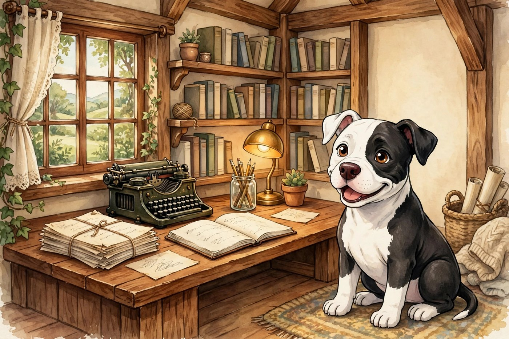

La Caja de herramientas

This is where you make things. Publishing checklists, journal prompts, and room to grow.
House tip: start with the Manuscript Map if you are mid-book or mid-publish. Use journal prompts when you need a small, honest page. Nothing here asks you to create an account. Common Questions
-
Manuscript Map: herramientas de publicación
A full publishing toolkit for indie authors: checklist, metadata, trackers, and local export. Runs in your browser. Data stays on your device unless you export it.
No account -
Consignas para diario
Category-based prompts with local save, load, and print. Stays in your browser. A quiet way to actually write something today.
Local only · no signup -
Baraja de 78 reflexiones
Seventy-eight reflection cards for self-discovery, each with its own artwork. Shuffle, draw, sit with the prompt, and write. Local save and print.
Local only · no signup -
Frasco de ánimo
Twenty-two bright quotes from the house quote jar, one at a time. Press the button whenever the day needs a little lift.
No signup -
Del título al inicio de una historia
Bring an odd title, answer four small questions, and spin it into a premise. Then start writing, with local save, download, and print.
Local only · no signup
The Manuscript Map is the whole tool, right in your browser.
Made something here you love?
More links like these live in Downloads and Printables. New tools join this bench only when they are real and useful.